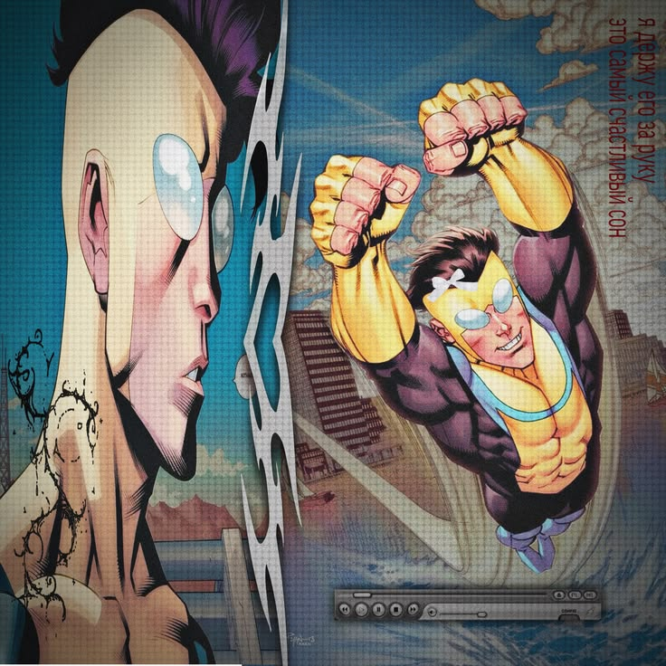

Invincible, la aclamada serie de cómics creada por el guionista Robert Kirkman y los artistas Cory Walker y Ryan Ottley para Image Comics (publicada entre 2003 y 2018), es ampliamente considerada una de las obras cumbres del género de superhéroes fuera del duopolio Marvel-DC. La historia sigue la trayectoria de Mark Grayson, un joven de instituto que descubre que es hijo de Omni-Man, el superhéroe más poderoso de la Tierra procedente del planeta Viltrum. A lo largo de sus 144 números, la historieta explora el crecimiento personal de Mark, sus dilemas éticos y las catastróficas consecuencias que enfrenta cuando la verdad sobre la brutalidad expansionista de su raza sale a la luz.
A diferencia de las franquicias tradicionales, la obra destaca por mantener una continuidad estricta y consecuencias permanentes: los personajes envejecen, maduran, cambian de bando e incluso mueren de forma definitiva. Con un estilo gráfico vibrante pero sin temor a mostrar secuencias de violencia e hiperimpacto visual, el cómic subvierte constantemente los cliqués habituales para abordar arcos a gran escala como la Guerra Viltrumita. Con un final definido y satisfactorio que abarca décadas de cronología, Invincible se consagra como un universo autocontenido, audaz y maduro que redefinió el cómic independiente.